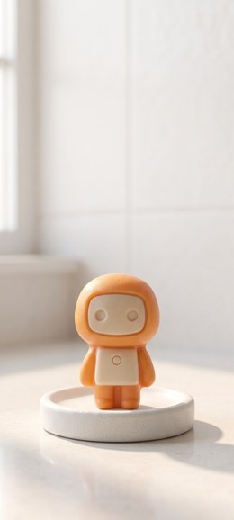
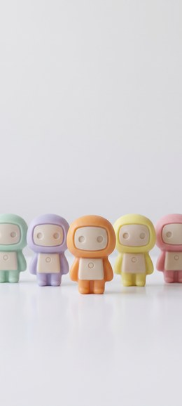
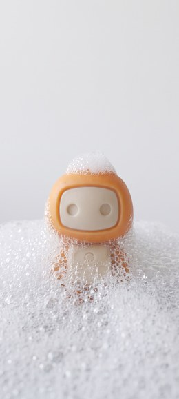
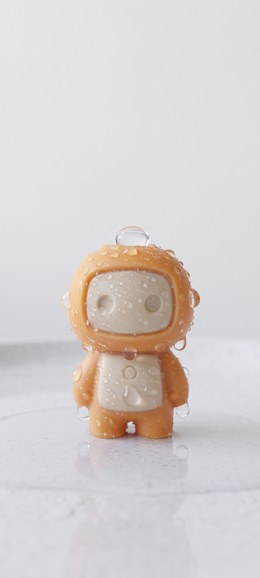
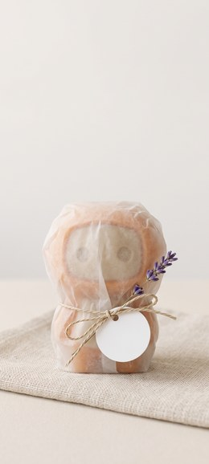
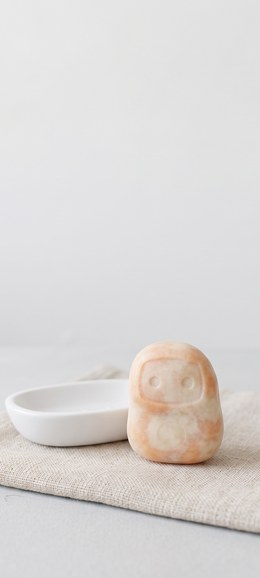
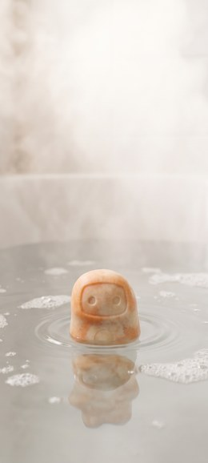
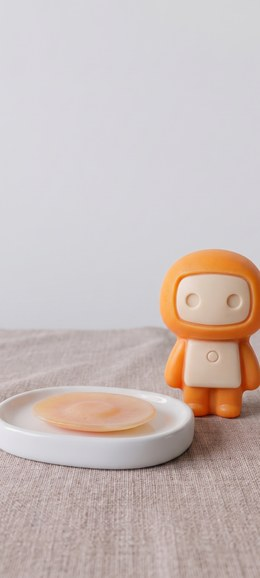

マスコットの形を石鹸にしてみようと思った。はじめは、いまの姿をそのまま小さくしただけのものができた。だめだった。腕と脚をあとからくっつけた人形にしか見えなくて、石鹸に見えない。石鹸は型に流して固めるものなので、体のどこにも継ぎ目があってはいけないらしい。
輪郭をひとつながりの塊にして、腕は胴体の側面と一体にした。目は彫り込みにして、口はなくした。角を全部丸くして、側面をほんの少しだけ外に広げた。型から抜くために本当に必要な形なのだそうだ。そこまでやって、ようやく石鹸になった。








後半の2枚だけ、少し先の話をしている。石鹸は使うほど小さくなって、いつか無くなる。それでも、次のがちゃんと控えている。石鹸にしてみてはじめて、そういう終わり方もあるのかと思った。
上の3分の2はわざと空けてあるので、アイコンを並べても絵が隠れない。1536×2752、スマホ向け。